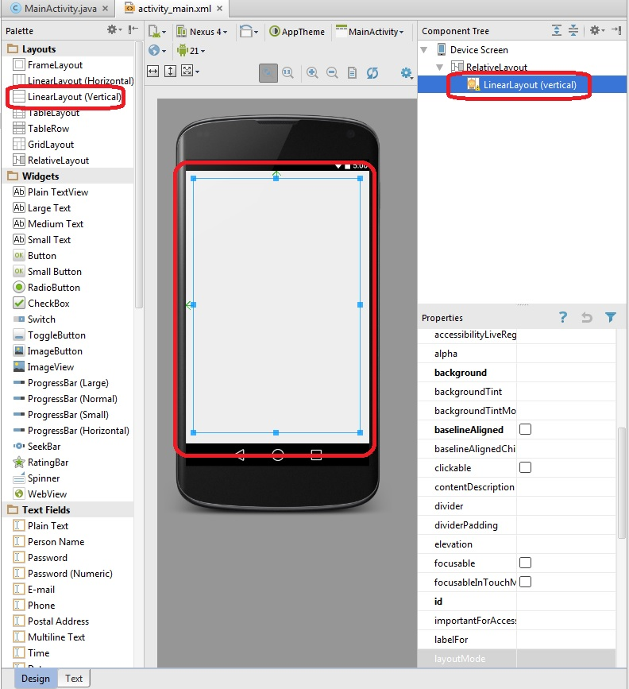
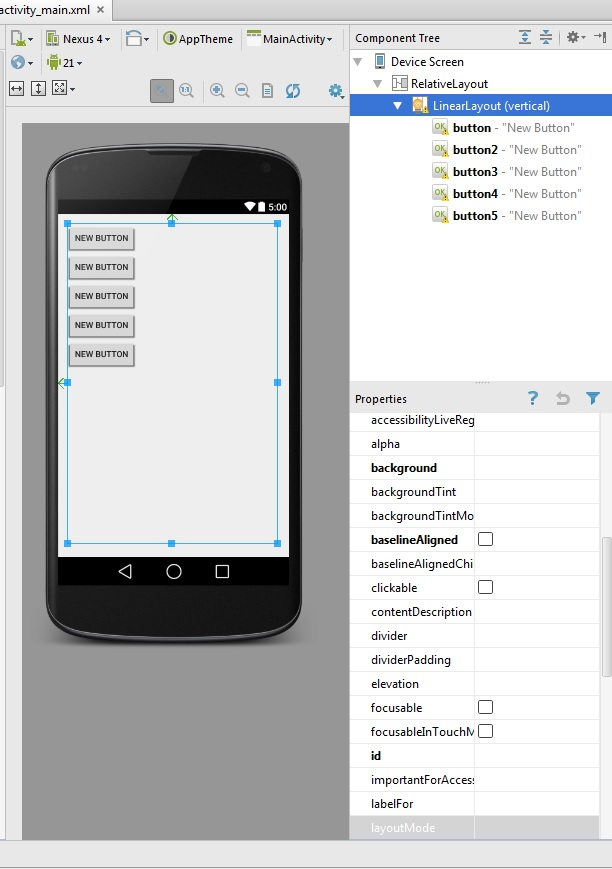
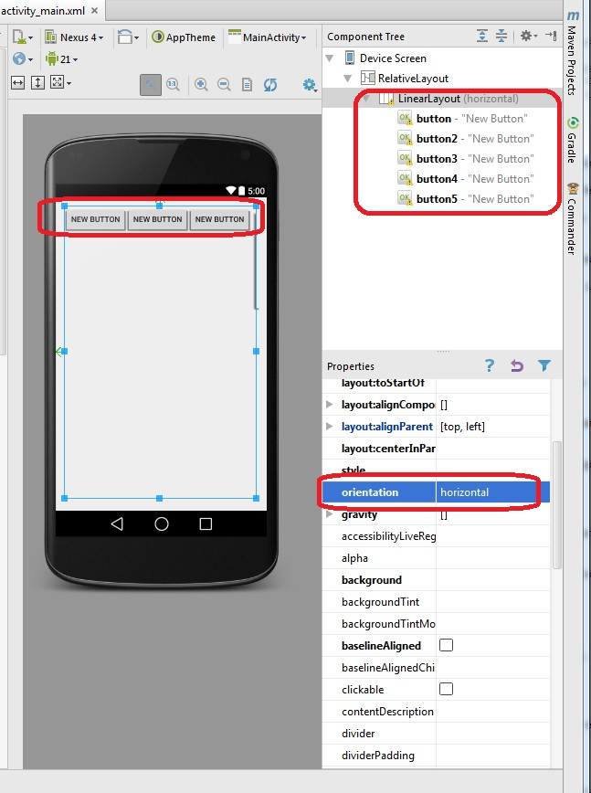
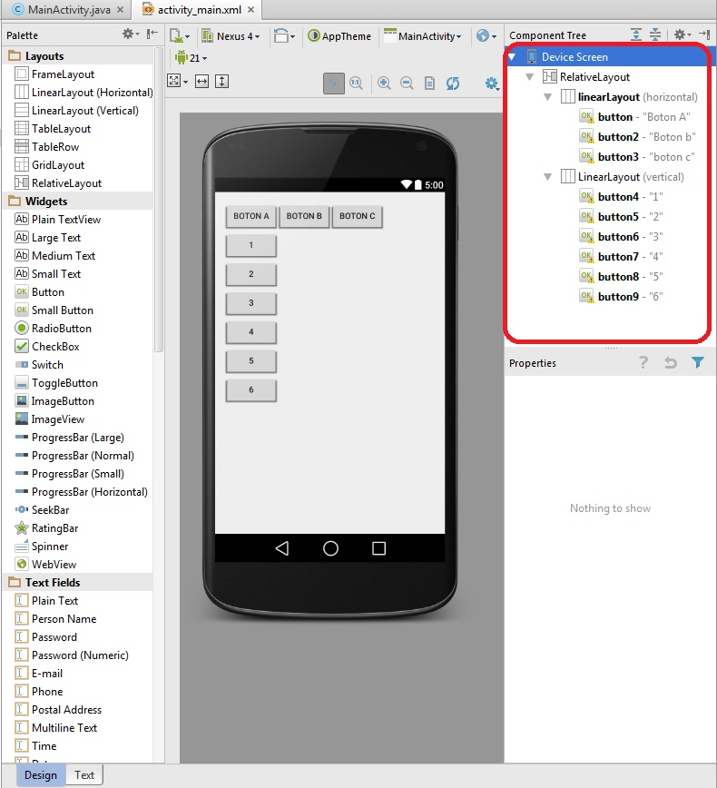
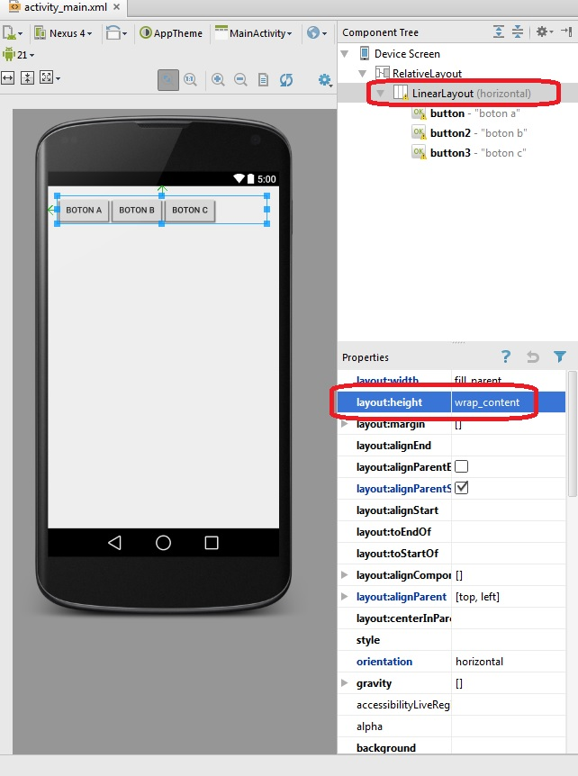
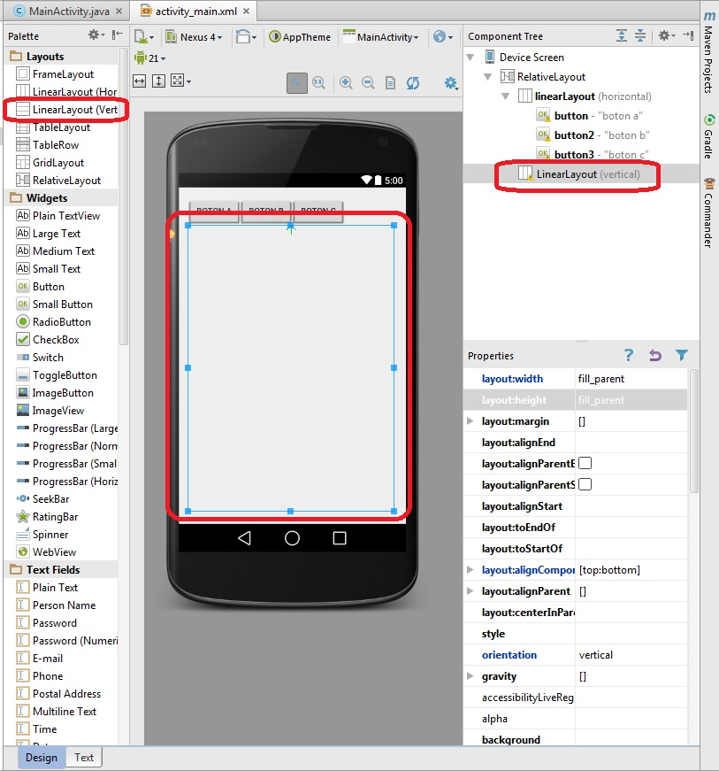
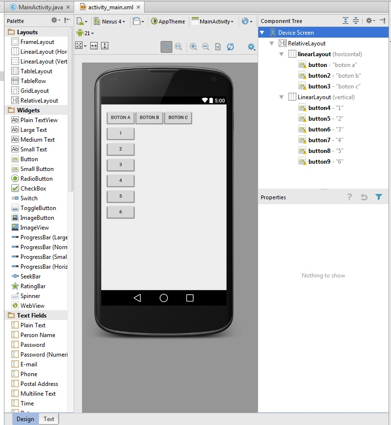
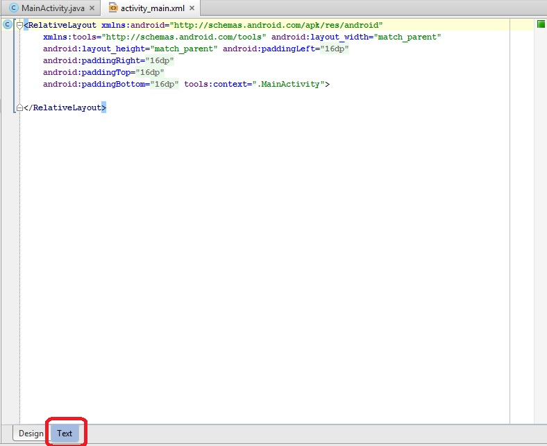
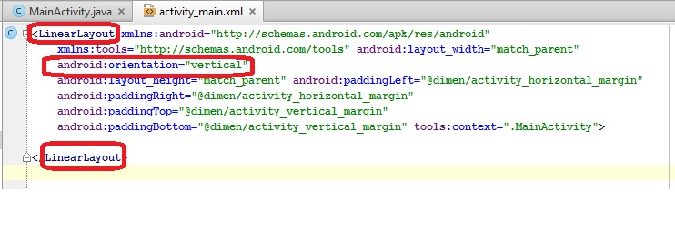

Android organiza las componentes visuales (Button, EditText, TextView etc.) en pantalla mediante contenedores llamados Layout.
Hasta ahora no nos a preocupada como organizar una pantalla, sino nos hemos centrado en la funcionalidad de cada programa que implementamos.
Ahora comenzaremos a preocuparnos como organizar y disponer las componentes dentro de la pantalla.
- LinearLayout.
LinearLayout es uno de los diseños más simples y más empleado. Simplemente establece los componentes visuales uno junto al otro, ya sea horizontal o verticalmente.
Creemos un proyecto llamado Proyecto020, borremos el TextView que agrega por defecto el Android Studio.
De la "Palette" de componentes de Android Studio arrastraremos de la pestaña "Layouts" el objeto de la clase "Linear Layout (Vertical)":
Ahora podemos ver que sucede cuando disponemos cinco botones dentro del contenedor LinearLayout (Todos los botones se disponen obligatoriamente uno debajo del otro y no hay posibilidad de ubicarlos con el mouse):
El primer cambio que podemos hacer a esta tipo de Layout es cambiar la propiedad "orientation" por el valor horizontal (esto hace que los botones se dispongan uno al lado del otro y no hay posibilidad de disponer controles uno debajo de otro)
Hay que tener en cuenta que si los controles no entran en pantalla los mismos no se ven y si son botones como en este caso es imposible hacer clic sobre los mismos:
Tengamos en cuenta que en la "Palette" de Android Studio aparecen dos opciones para disponer "Linear Layout(Horizontal)" o "Linear Layout(Vertical)" la única diferencia es que se inicializa la propiedad "orientation" con el valor: horizontal o vertical.
Podemos disponer más de una componente de tipo LinearLayout para implementar nuestra interfaz visual. Veamos los objetos y propiedades a configurar si queremos la siguiente interfaz:
Como vemos hemos dispuesto dos LinearLayout el primero con orientación horizontal con los botones con las etiquetas "BOTON A", "BOTON B" y "BOTON C". Luego de disponer los botones podemos observar que el LinearLayout ocupa todo el alto de la pantalla (para que ocupe solo el espacio de la altura de los botones debemos seleccionar el Linear Layout y cambiar la propiedad "layout:height" por el valor: "wrap_content" asegurarse que está seleccionado el LinearLayout y no alguno de los botones):
Arrastremos el segundo LinearLayout vertical dentro del RelativeLayout (podemos arrastrarlo sin problemas a la interfaz visual o arrastrarlo a la ventana "Component Tree", pero lo importante que quede al mismo nivel que el primer Layout y no dentro del otro LinearLayout y lo redimensionamos para que quede debajo del otro en pantalla):
Ahora podemos arrastrar un conjunto de botones dentro del segundo Layout:
Eliminando el RelativeLayout de la raíz de la aplicación.
Si no necesitamos que la raíz de la interfaz defina un RelativeLayout podemos disponer en su lugar por ejemplo un LinearLayout. Modificaremos el programa hecho hasta ahora de tal forma que la interfaz sea solo un LinearLayout con orientación vertical y con 5 botones en su interior.
No lo podemos hacer en forma visual con Android Studio, debemos modificar manualmente el código del archivo XML, cambiamos la vista "Design" por "Text":
Procedemos a modificar el nombre del Layout y definir e inicializar la propiedad "orientation" (Remplazamos el nombre RelativeLayout por LinearLayout y agregamos la propiedad android:orientation="vertical"):
Ahora podemos disponer los botones en la interfaz y aparecerán uno debajo del otro similar a como empezamos pero será mas eficiente ya que no hay un RelativeLayout en la raíz de la interfaz:

Este proyecto lo puede descargar en un zip desde este enlace: proyecto020.zip